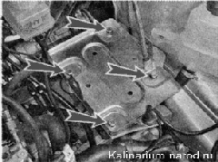
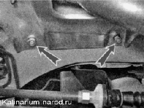
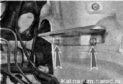

Полка аккумуляторной батареи - снятие и установкаСнятие 1. Частично сливаем охлаждающую жидкость, чтобы уровень жидкости был ниже расширительного бачка. 2. Снимаем аккумуляторную батарею. 3. Снимаем с полки резиновый коврик. Торцовым ключом на 13 мм отворачиваем четыре болта крепления полки к кронштейнам и снимаем полку. 
4. Отсоединяем шланг системы охлаждения от расширительного бачка 5. Ключом на 13 мм отворачиваем две гайки крепления наружного кронштейна полки к лонжерону и снимаем кронштейн, выводя из его отверстия кронштейн. 6. Тем же ключом отворачиваем две гайки крепления внутреннего кронштейна полки к брызговику кузова. Установка Устанавливаем полку в обратной последовательности. Доливаем охлаждающую жидкость до нормы. |